緣起
一二年時，習慣聽蔣勳老師的廣播節目《美的沈思》，也相信藝術必須回到生活。而當時正逢自媒體興起，我便認為影像是貫徹這種信念最好的載體，並為此考進了北藝電影系。然而，在學習過程中卻理解到電影作為「文化工業」的現實而以休學作結。
後來開始參與了各地的廟會、遶境，啟發了「民間藝術」別於「學院藝術」的可能，並到了盛岡、弘前、青森一帶的祭典，看著男女老少不分年齡在街上打鼓、跳舞，並推著燦爛眩目的「燈車」，我才真正意識到：祭典不就是將美學落實於生活最好的載體嗎？
到了二〇年，我決定在書店「蟬雨越讀」發起一連串的祭典實驗活動，而其中以「元宵」為背景的「上元春鬧」作為代表，逐漸受到了人們的支持與響應。不只讓我對「藝術回到生活」的價值有了真實的理解，更發現「祭典」作為一種藝術形式的發展潛力。
如此作上元已經六年了，一次次帶著人們上街歡慶、跳舞、與陌生人連結，並創造何為自己的歌、自己的文化？每年每年，都感覺到一種在城市裡難能可貴的生命力，讓我至今都能可以很肯定說：這是一份值得傳承的嘗試。
論述
祭典藝術
「祭典藝術」，是一種強調組織性、群體關係、跨領域性、文化與儀式的藝術形式。
在今天，這樣的形式，不只遍佈在廣大鄉野、都市裡的神明遶境，甚至大型運動賽會、各種音樂祭，都可以視作一種祭典藝術的「表現」。
然而，卻鮮少有人重新直面「祭典藝術」本身。民俗研究多專注在祭典的社會性或歷史意義，而新一代的「某某祭」，又往往商業考量高於內涵價值。
但回到本身，我們關心的是「祭典藝術」如何作為一種創造性的「實踐」。如何真實地使人們連結、使民俗藝術被創造、甚至成為文化、地域認同的載體等。
為此，我們比起「觀賞」，更重視「參與」；比起「專業」，更重視「學習」；比起「有多少資金」，我們更重視「資金從哪裡來」。
「上元春鬧」作了六年，我們持續探索「祭典藝術」的可能，還期待繼續擴大實踐，讓「可能」逐漸成為「方法」，為未來的世代開展不同的藝術道路。
上元作為載體
「東風夜放花千樹，更吹落，星如雨。」
——辛棄疾《青玉案·元夕》
「上元」在歷史中有「打破宵禁、百姓齊慶」的意象。但不同於以「神明」為核心的廟會，「上元」一直遊走在「民間自籌」與「政府籌辦」之間。而這點，我認爲在構成上，是更符合「當代」的。
因為它沒有太強烈的宗教束縛，卻又有足夠的歷史脈絡，且藉由「燈籠」這個媒介，很容易讓人回到以「美」為核心的「認同」。比方說，比起是否起源於漢代的考證，辛棄疾的詩「東風夜放花千樹」更為上元下了註解；比起對天官的祭祀，妝點在燈籠上的小說故事更為人稱道。
所以，在發展「祭典藝術」的過程，我們便選擇以「上元」作為時間的載體，不只在創作上擁有更多的自由，也同時意識到，「上元」回應了家族結構轉變後，當代人對「年味消失的普遍失落」。這使得上元不只是借題發揮，而擁有繼續更新文化、調節情感的意義。
策劃團隊
執行方法
裝置／造型／美術
作燈，並不只是做出響應「燈節」的裝置。更是創造上元現場「凝聚」最直接的方式。
六年來，我們不只堅持手作的價值，且試著將傳統「靜態」的花燈變成能上街遊行的裝置。是想要讓人重新認識到，視覺藝術在動態隊伍中，具備著的「穩定」、乃至「永恆」的特質。
對比著不斷變化、隨著環境調整型態的「隊伍」，一個個的「燈」，不只能讓隊伍中的人們不斷地聚焦，且能讓經過的陌生人最快理解到「這是什麼」。
而創作的過程中，我們不只探索漢字圈的常用文樣與符號，也拜訪了各地的祭典的藝閣、山車、屋台，最後則嘗試結合地方特性，包含港口歷史、舊聚落建築的裝飾等。還希望能藉由上元的「裝置」們，為「視覺文化元素」找到新的定義與運用的可能。
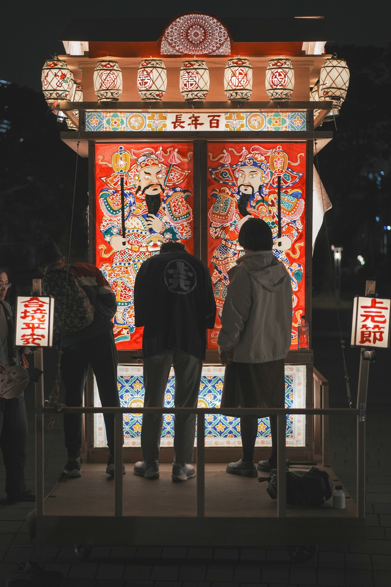
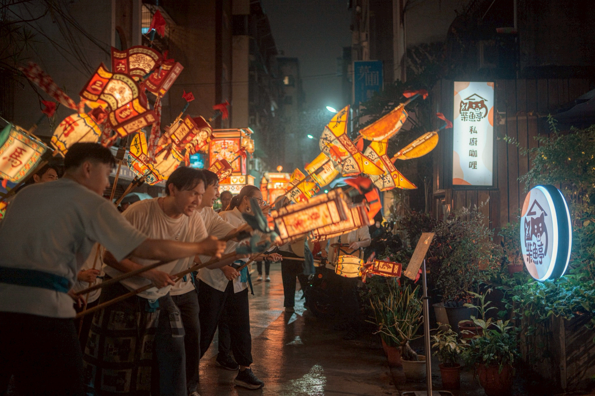
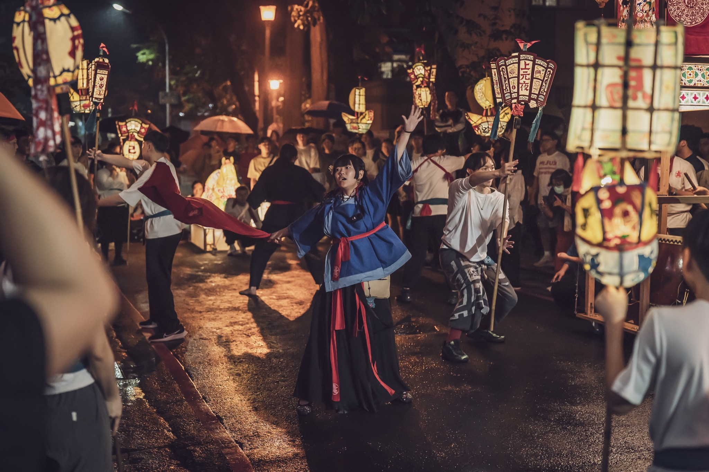
表演藝術
壬寅上元，因為眾多表演藝術工作者的加入，而讓我們開始將上元從花燈的製作擴展到演出項目的規劃。如此一鼓作氣地，我們增加了舞蹈、打擊、音樂、戲劇等藝術領域，讓上元突然變成一眾多藝術「齊放」的祭典。
然而，這雖然更接近傳統上對祭典的藝術想像，但也讓隨後的幾年，「如何跨域」變成了核心的課題。畢竟，當代的藝術學院往往是壁壘分明的，更不用說以此為基底的藝術家們如何一起創作、乃至共同完成一場「祭典」。首先在藝術語言的使用上，就有極大的隔閡需要被消解。
然而，這或許也是在當代做祭典特殊意義，畢竟我們的行動，首先便是希望每個人的生活能離藝術更靠近，而如果所有的藝術領域得以暢行無阻地溝通、乃至合作，那必然意味找到了超越領域壁壘的語言，我想，那作為對大眾的推廣，將會打下很好的基礎。
如此上元的表演藝術，從癸卯年以後，便有意識地發展「必須互相關聯」的觀念，不管是將歌謠與舞蹈結合，還是要讓裝置與打擊相連，都不斷地嘗試跨越理解的差異，去尋找「共通」的基礎。而其中也確實使非藝術圈的成員孕育出想發展的「跳鼓隊」（舞與打擊的結合）與「竿燈隊」（裝置與舞蹈的結合）等想像。而這都讓我們相信：一般民眾是可能蘊含更多創作的可能性、且值得更深地被發展的。
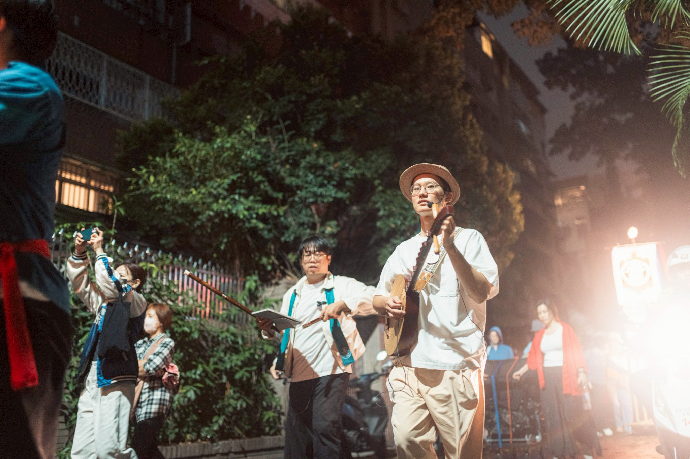
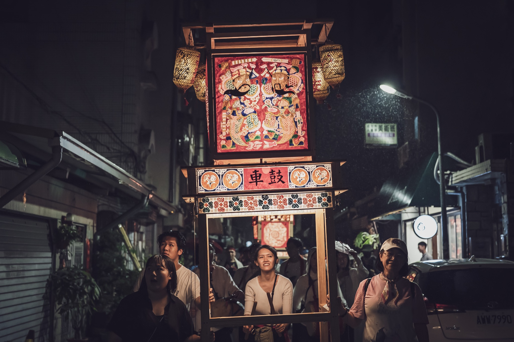
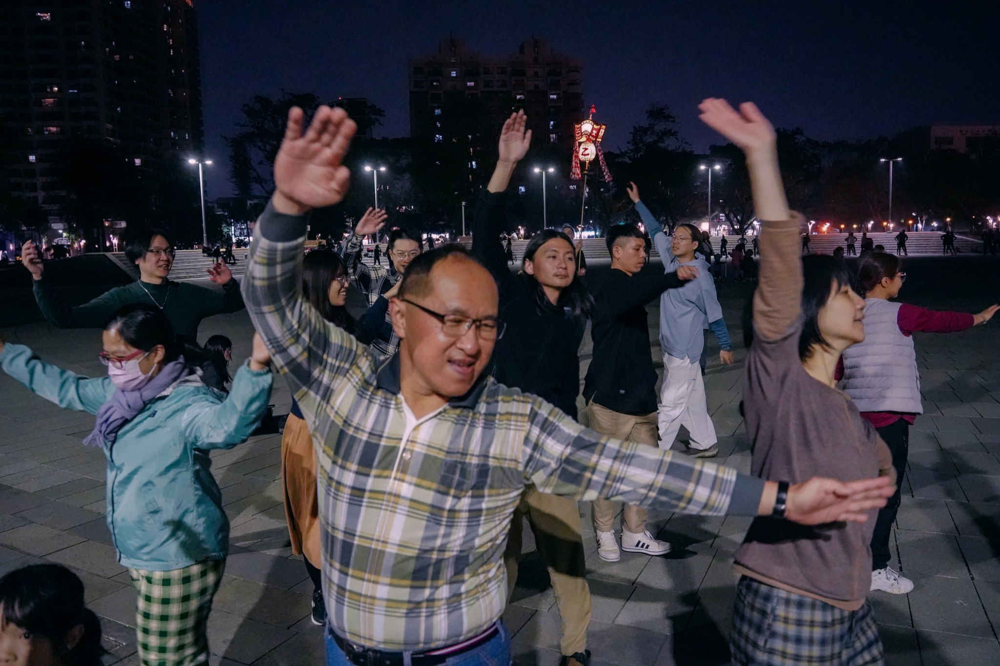
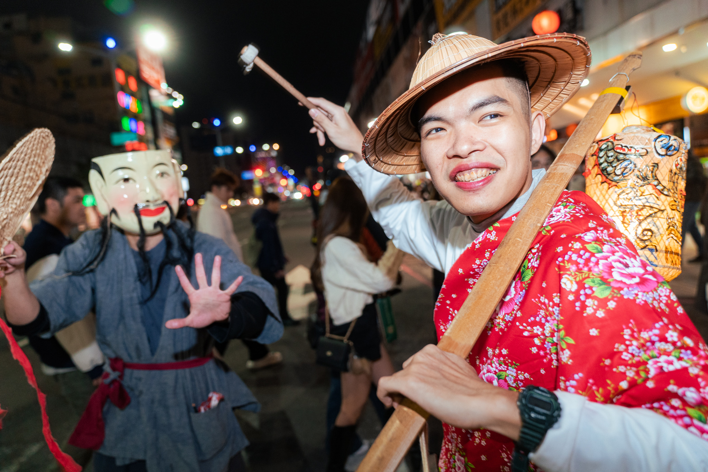
組織／企劃
在祭典的構成中，最核心的便是「人」如何參與、認同的問題。
畢竟，除了籌備過程中的裝置手作，也包含現場的扛轎、推燈車、環舞、竿燈舞、機動人員等等，而這些都需要大量的人力作為基礎。
為此，除了舉辦小型的體驗工作坊，讓更多人能有認識祭典的方式，也需要接觸不同的參與群眾，如親子、學生、老者、或其他地區的居民等。我們發現「組織管理」與「活動企劃」等角色，作為提供有創意的參與形式、乃至認同感的培養，確實是祭典不可或缺的一環。
我們希望能在祭典中重新討論「人如何加入」到「人如何投入」，乃至「人如何自發地在別處發起組織」。期待最終能讓祭典組織作為一種社群方法，在城市的新興角落開枝散葉，創造更多人「參與」而非「體驗」的空間。
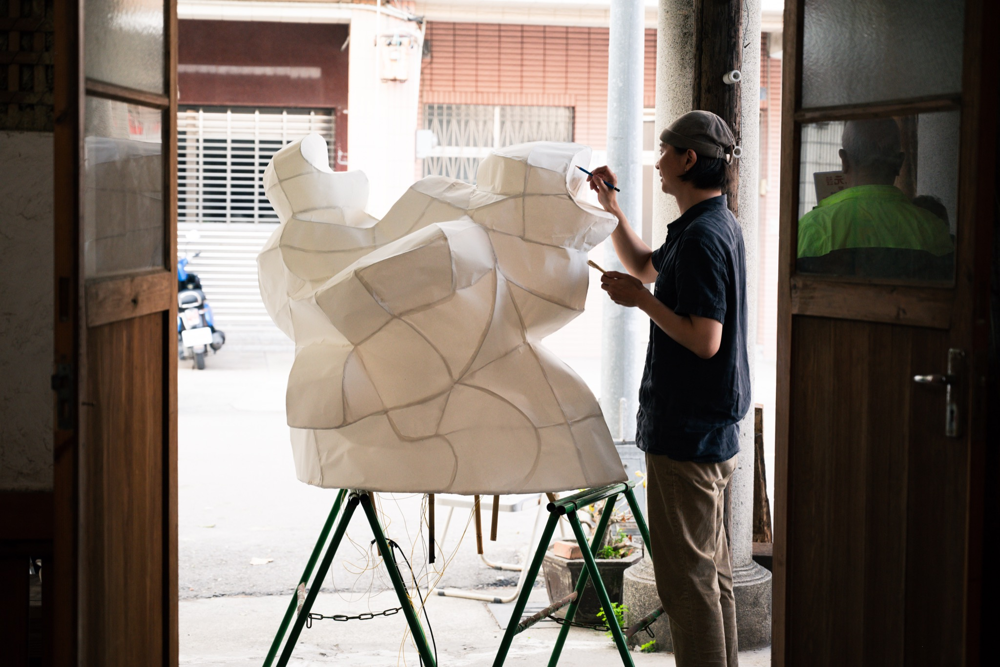
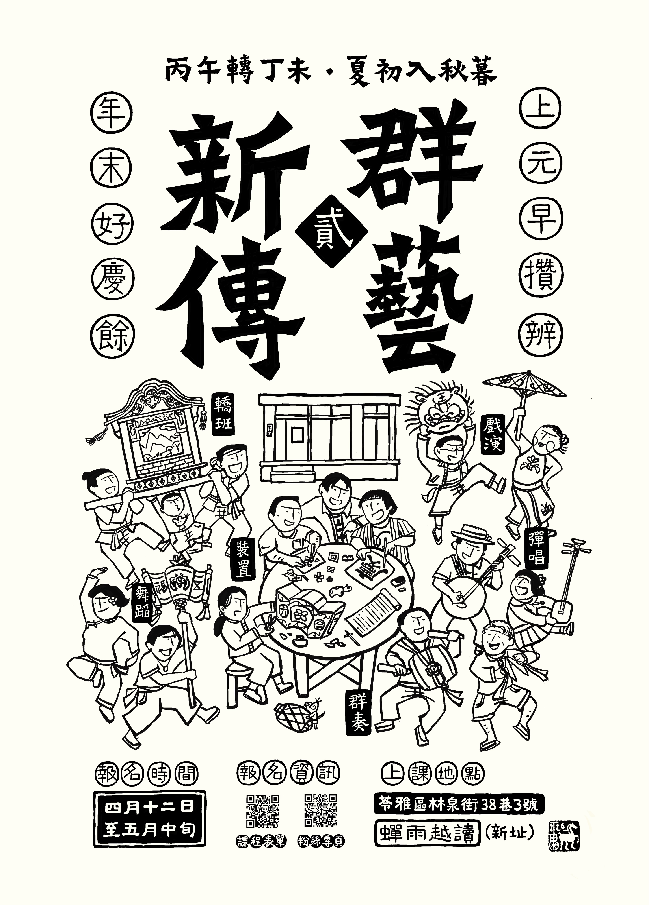
觀眾
觀看遊行、跟隨路線、進入最後共聚現場
參與者
現場持竿燈、跟唱、共舞
籌備者
參與製作期，協助裝置彩繪，加入舞蹈、音樂訓練等
學員
事前參與節奏、戲演、舞蹈、裝置課程與訓練
事前工作坊據點
作品形式與現場結構
路線圖
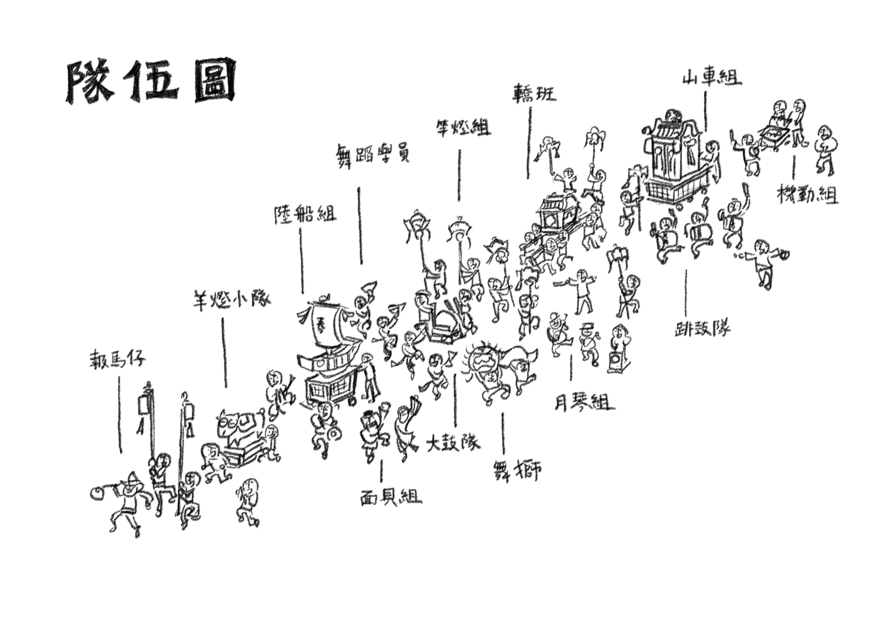
現場場景結構
時間僅作參考，上路後，一切莫料，順流而行。
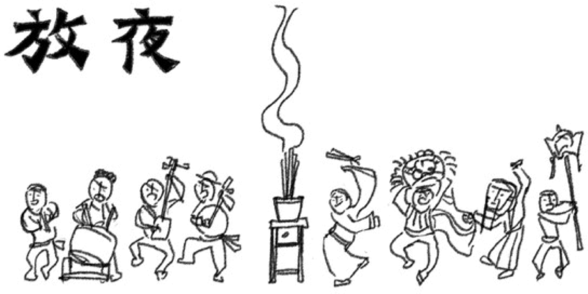
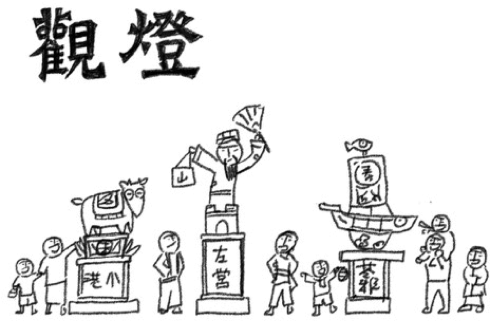
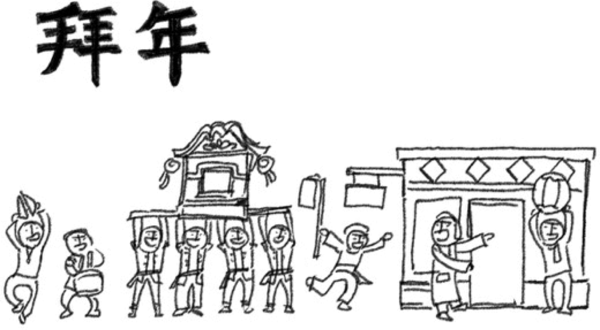
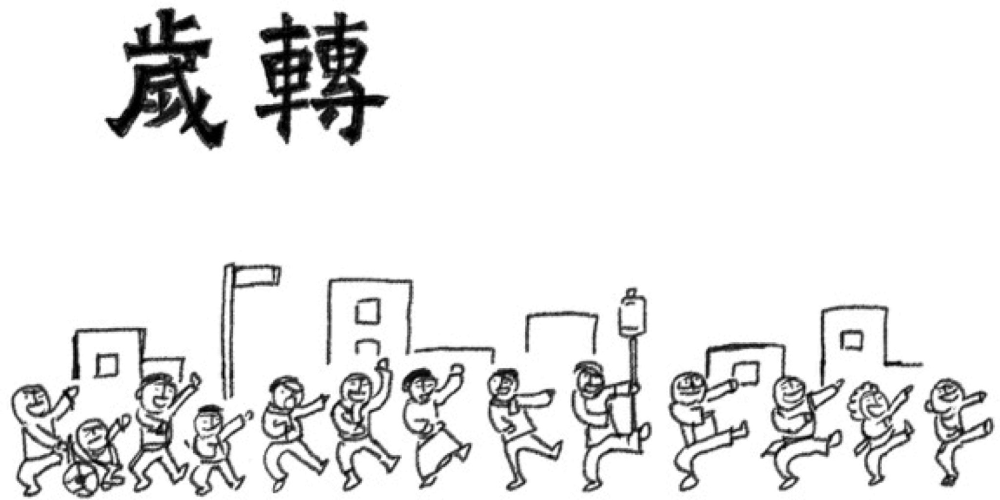
初步作品設計
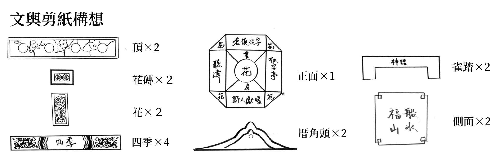

看燈十五
看燈十五，月半是元宵
你若是欲說情，在花轎邊莫閉思
遇著一陣人，天下太平時
鼓仔燈，文文火
望緣望圓，著來為你舞一支
望和望合，著愛佮恁唱一曲
十二月令
＊ 前奏
正月
正月過年人團圓
Chiaⁿ-ge̍h kòe nî lâng thoân-îⁿ
講到鳥鼠來結親
kóng kàu niáu-chhí lâi kiat chhin
眠床枋下鑼鼓吵
bîn-chhn̂g-pang hā lô-kó͘ chhá
無電無火著來放炮仔
bô tiān bô hóe tio̍h lâi pàng phàu-á
二月
二月花蕊漸漸開
Jī-ge̍h hoe-lúi chiām-chiām khui
稼軒的詩句傳千里
Kà-hian ê si-kù thoân chhian-lí
越頭（回首）燈火闌珊處
oa̍t-thâu teng-hóe lan-san chhù
君在元宵也柔情
kun chāi Goân-siau iā jiû-chêng
三月
三月清明有歇睏
saⁿ-ge̍h Chheng-bêng ū hioh-khùn
來去天竺提經文
lâi-khì thian-tiok the̍h keng-bûn
唐僧拄著（遇到）假佛祖
Tông-seng tú tio̍h ke Pu̍t-chó͘
妖怪予（被）悟空槓（打）kah哀爸哭母
iau-koài hō͘ Gō͘-khong kòng kah ai-pē-khàu-bú
＊ 間奏：暗示季節轉換
四月
四月鳳山日頭強
sì-ge̍h Hōng-soaⁿ ji̍t-thâu kiông
竹枝書寫迎王眾
tek-ki su-siá giâ ong-chiòng
乞糖乞米乞多福
khit thn̂g khit bí khit to-hok
一倍還須兩倍償
it pōe hoân su lióng pōe siông
五月
五月端陽的香芳（香包）
ngó͘-ge̍h Toan-iûⁿ ê hiuⁿ-phang
講到陳三五娘相見面
kóng kàu Tân-saⁿ-Gō͘-niû sio kìⁿ-bīn
一人擲，一人收
it lâng tàn, it lâng siu
燈下故事有好尾（好結果）
teng hā kò͘-sū ū hó-bóe
六月
六月海上多風颱
la̍k-ge̍h hái-siōng to hong-thai
講起黑水溝兩元宵
kóng khì O͘-chúi-kau nn̄g Goân-siau
逢甲夢月袂當（沒辦法）轉去
Hông-kah bāng goa̍t bē-tàng tńg-khì
賴和望月正當時
Lōa-hô bōng goa̍t chiàⁿ-tong-sî
＊ 間奏：暗示季節轉換
七月
七月大事是普渡
chhit-ge̍h tāi-sū sī phó͘-tō͘
燈節鬼仔西門慶
teng-cheh kúi-á Se-mn̂g-khèng
在生逐日像過年
chāi-siⁿ ta̍k-ji̍t chhiūⁿ kòe-nî
繁華城市可憐伊
hoân-hôa siâⁿ-chhī khó-liân i
八月
八月中秋東坡詞
pat-ge̍h Tiong-chhiu Tong-pho sû
不止月圓人長久
put-chí goe̍h-îⁿ jîn tióng-kú
又寫神仙迷海島
iū siá sîn-sian bê hái-tó
逐家作伙來拚酒
ta̍k-ke chò-hóe lâi piàⁿ-chúi
九月
九月秋天猶是熱
káu-ge̍h chhiu-thiⁿ iá sī joa̍h
火燒火，人看人
hóe sio hóe, lâng khòaⁿ lâng
梁山好漢入東京
liông-san hó-hàn ji̍p tang-kiaⁿ
𨑨迌踅街鬧官衙
chhit-thô se̍h-ke nāu koan-gê
＊ 間奏：暗示季節轉換
十月
十月日頭來生翼（翅膀）
cha̍p-ge̍h ji̍t-thâu lâi seng si̍t
先生閒閒講盛世
sian-siⁿ êng-êng kóng sēng-sì
天頂月娘近天光時
thiⁿ-téng goe̍h-niû kīn thiⁿ-kng sî
點點殘燈滿人世間
tiám-tiám chhân teng móa jîn-sè kan
十一月
十一月池上田火薰（火燃燒後產生的煙）
cha̍p-it-ge̍h Tî-siōng chhân hóe-hun
蔣勳講起紅樓夢
Chiúⁿ-hun kóng khì Âng-lâu-bāng
貴妃省親元宵日
kùi-hui séng-chhin Goân-siau-ji̍t
寶玉初入佇大觀院
Pó-gio̍k chho͘-ji̍p tī tōa-koan-īⁿ
十二月
十二月年終好過冬
cha̍p-jī-ge̍h nî-chiong hó kòe tang
流淚的人是醉翁
liû-lūi ê lâng sī chùi-ang
仝款燈節無㒰人
kāng-khoán teng-cheh bô kāng-khoán lâng
紲（接、續）來結花（戴花）歡喜行
sòa-lâi kiat-hoe hoaⁿ-hí kiâⁿ
＊ 尾奏
慶津梁
丙午年修訂版
十五暝，慶津梁，梳妝打扮地基主
十五暝，慶津梁，厝邊隔壁來寫新族譜
＊ 間奏
移民城市人來去，家譜三代三个所在
澎湖南渡西海港，海港又閣落打狗
打狗起頭點燈火
五十年來景色換，祖孫三代三个記持
序大講他們時代好，後生講他們才是對
啥物款的感情是仝款？
清明端午過元宵，同齊點燈閣一擺
莫驚生份到海墘，文火愈濟滿天星
十五暝，慶津梁，梳妝打扮地基主
十五暝，慶津梁，厝邊隔壁來寫新族譜
十五暝，慶津梁，莫管時代差了天地
十五暝，慶津梁，共許一個百年久長
＊ 間奏
祖先趁食行海路，金門莿桐落南洋
爸母目睭紅記記，船身目睭求順利
過番爿要幾千里？
批信講盡海上事，銀票心肝寄轉厝
做買賣就成通譯，欲飼全家成苦力
就驚海禁閣再起
流水季風連相紲，王爺保庇趕瘟疫
東洋西洋會相拄，起番仔樓貼花磚
十五暝，慶津梁，四海朋友來𨑨迌
十五暝，慶津梁，鬥陣放炮互相恭喜
十五暝，慶津梁，人落他鄉嘛愛團圓
十五暝，慶津梁，共許一個百年久長
＊ 間奏
祖先冒險渡海來，海湧頂懸求媽祖
思想枝講犁荒埔，薪傳作戲慶豐收
今嘛日子漸漸仔有賰
紅毛帶來黃金仔雨，日本帶來鐵枝仔路
爭水爭地爭權力，為著生活為面子
後來有人結親情
桌頂交換手路菜，燈下男女求未來
無仝腔口心毋驚，流浪到遮這是有緣
十五暝，慶津梁，戲棚台頂仝款媠
十五暝，慶津梁，戲棚下跤攏有情
十五暝，慶津梁，莫分客主相褒祝賀
十五暝，慶津梁，共許一個百年久長
＊ 間奏
大船入港開高雄，大路一心到十全
輕重工業好交易，貨櫃天車通世界
但是港邊有貨無人
都市樓房揬天頂，大管煙筒拆祖厝
護山護水護草埔，為著生活為落定
士農工商各有所求
鐵橋鐵路月光照，囡仔佇遮來大漢
海潮又閣鬧海港，斑芝花蕊開滿山
十五暝，慶津梁，你來唱歌我跳舞
十五暝，慶津梁，你來摃鼓我拍鑼
十五暝，慶津梁，全家大細來做燈
十五暝，慶津梁，共許一個百年久長
期程進度表
| 主線 / 核心任務項目 | 10月 | 11月 | 12月 | 1月 | 2月 | 3月 |
|---|---|---|---|---|---|---|
| 行政主線 | ||||||
| 文化中心場地使用送件與確認申請 | ||||||
| 田野場勘、路線規劃與兩路權送件 | ||||||
| 活動意外險投保與音響／無線電確認 | ||||||
| 展後場復撤場、會計單據核銷與結案 | ||||||
| 裝置主線 | ||||||
| 羊年主燈車（結構／木電／彩繪裝飾） | ||||||
| 雙轎輿（洋樓脊設計／木電／剪紙上框） | ||||||
| 核心人員服飾（打版／手染裁縫訂製） | ||||||
| 竿燈／生肖燈／地區燈／竹編燈籠共創 | ||||||
| 表演主線 | ||||||
| 原創謠曲（詞曲創作與樂團編曲） | ||||||
| 大鼓／舞蹈／戲劇四大群藝課程培訓 | ||||||
| 現場彩排與技術整排（小大技排） | ||||||
| 年前大總排、初四遊庄、正日展演 | ||||||
| 企劃主線 | ||||||
| 在地推廣（書店每週活動／店家洽談） | ||||||
| 三地社區手作工藝工作坊 | ||||||
| 獨立紀錄片與文史小誌後期與發表 | ||||||
計畫創新或特殊性
累積成果｜建立以燈車為主體，在農曆新年春節後的活動雛形
對本年意義｜確認祭典作為公共藝術形式的可能
累積成果｜嘗試透過藝術表現，創造儀式感
對本年意義｜確認演出與裝置關係
累積成果｜活動轉往高雄在地民眾共同主辦，更以素人為主
對本年意義｜開始實踐田野工作，讓高雄地方性開始進入作品
累積成果｜發展工作坊，與社區共創燈籠、第一次在文化中心圓形廣場
對本年意義｜確立社區民眾參與製作燈籠的方法
累積成果｜在身體、聲音、裝置等藝術有所突破
對本年意義｜發展民謠、春集、跳上元、透過〈限界藝術論〉發展視覺語言
累積成果｜確定活動精髓
對本年意義｜透過課程確保活動具備穩定財源
預計成果｜將上元發展成完整規模
計畫意義｜讓「可能」成為「方法」，建立以民間自籌為核心的祭典藝術展演模型
丙午年，第一次將遊行的區域延伸至非高雄核心發展區域的左營舊城，才意識到在不斷解構疆域的都市中，各區域仍殘存著的文化特色，是都市文化如何真正「多元」不可忽視的角色。
所以，在丁未年，我們希望能夠更專注發展這個概念，嘗試推動「地方燈」的計劃，讓人們得以在「縣市」級別的認同下，回到與各人生活環境更接近的文化、歷史進行上元的創作。
為此，我們需要突破舊有的難題，嘗試與在地的居民互動、交陪，乃至藝術的推廣、想法的傳遞。而這正好連結另一項希望在丁未年落實的計畫，也就是「如何企劃能讓大眾參與的活動」。
歷年來，我們更多的力氣花在如何確立上元的美學、文化的想像，雖然過程中有過「里燈」、「商號燈」等與地方居民連結的計畫，但都還處於實驗階段，尚未找到固定的方法以複製經驗。
在丁未年，我們希望發展更多推廣的活動，思考如何將累積的經驗、文化的觀念更好地傳遞給圈外的人們，畢竟，我們理解到，當今天目標對象並非「藝文圈」時，便需要與外界進行更多層面的轉譯，才有可能回應「藝術應該回到生活」這項核心。
如此，我們將尋找擅長策劃具有體驗性質活動的能手，試著將目前累積的資源能夠有效的傳遞出去。同時，也將與各藝術領域的老師們嘗試協作出帶有上元特性的工作坊或體驗課，以觸及更多圈子的人們。
我們希望從書店周邊空間逐步擴大，讓上元的藝術四處生根，也許從小型的剪紙、上路節奏的學習，到中型花燈的製作、基本遊行隊伍的組成，一步步讓人們藉由實作體驗，理解「祭典藝術」如何作為一種生活實踐的可能，而這確實是至今未跨過的一步。
預算經費
丁未上元・總預算
862,500 元
支出結構
收入比例（補助 vs 自籌）
▶一、人事費391,000 45.3%
▶二、事務費115,000 13.3%
▶三、業務費100,000 11.6%
▶四、旅運費57,000 6.6%
▶五、材料費137,000 15.9%
▶六、設備費52,500 6.1%
▶七、其他雜支10,000 1.2%
預期成效
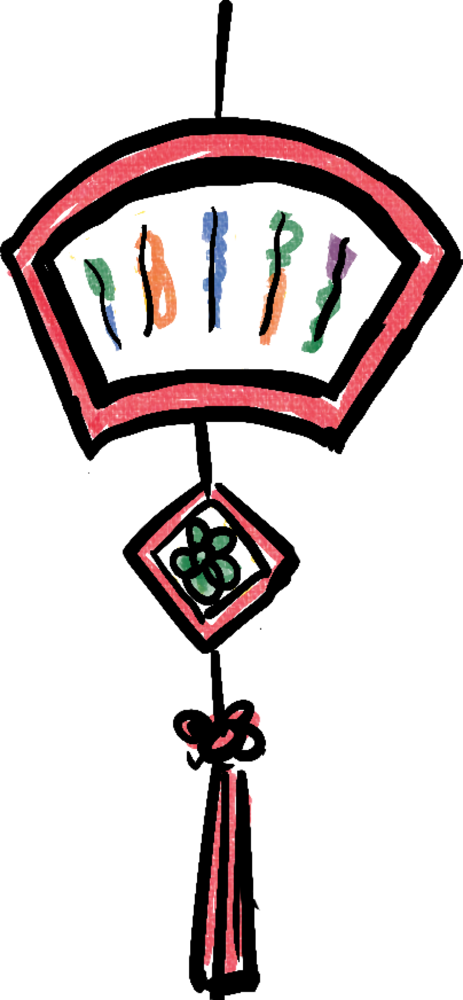
0
人次
實體觸及常民
0
人
核心工作人員
0
堂
長期藝術課程
0
部
紀錄短片
核心產出與量化效益
公共展演與群眾觸及
完成 3 天城市公共空間動態展演，預計前往舊左營舊城聚落點燈、跨越五福大路前往鹽埕港口，預估沿途觸及常民、社區居民及街頭行人 5,000 人次以上。
社群動員與藝術參與
動員專業藝術家與後勤場控人員共 100 人，培育 50 名核心素人表演者，引導 100 名深度參與學員與常民持手作竹編竿燈走上街頭共同演出。
核心藝術物件與節慶裝置產出
- ・羊年主燈車與移動裝置 2 台：全新高規格打磨與木電彩繪製作，包含前水船燈與後山樓燈，作為隊伍前後靈魂座標。
- ・手工藝「花轎與文輿」2 座：結合閩南院落燕尾脊與中西合璧洋樓意象，將裝置承載於轎班肩膀，展現高於日常的文化內涵。
- ・天干地支「竿燈」12 支：融合泉州無骨扎燈工藝，以竹竿提升視覺高度，工作坊引導常民共創竹編燈籠 100 顆以上。
- ・手染訂製祭典服飾 25 套：採購胚布、本土手工染布並請裁縫專屬剪裁，創造具強烈身分認同感的常民藝術符號。
- ・四大系列課程 48 堂（節奏、舞蹈、戲演與裝置），排版印製發行《年秊》文史小誌，並產出 1 部紀錄短片。
質化效益 點擊掛箋看更多
翻轉觀演關係
實踐當代祭典藝術
打破專業藝術菁英與常民大眾的二元對立。透過「固定結構、開放參與」的機制，讓街道轉化為當代藝術的劇場現場，建立具備台灣本土語彙的動態展演與體驗模型。
重塑城市空間感
復興常民認同
以跨越「舊左營舊城聚落」到「現代化鹽埕港口」的跨區走庄代替定點消費市集。用身體與燈火重新編織高雄多層次的歷史地理脈絡，喚醒當代人對失落年味的深刻文化認同。
藝術賦權與地方共生
群藝新傳
透過長期課程（群藝新傳），將祭典核心工藝與表演技術實質賦權予廚師、醫生、工程師等各行各業的素人，讓生活美學真正於地方生根，形成具備高度向心力的民間文化共同體。
宣傳推廣策略及具體作法 點擊探索多元傳播渠道
三地實體基點扎根
（線下交陪）
以舊左營「林家」、文化中心「蟬雨越讀」書店、鹽埕「侯家」為實體推廣據點，舉辦鄰里說明會與手作工作坊。透過與里長、廟宇、商號「交陪」發放商號燈，建立線下人情網絡。
數位文史轉譯
（線上擴散）
利用「蟬雨越讀」書店既存的社群能量及年秊粉專、社區夥伴，以「田野工作日記」的形式連載歷史故事，並定期發布縮時製作影片與樂團排練側錄。
群眾募資與紀念品
（實體擴散）
發行限量設計的「紀念毛巾」與「經典明信片」作為募資回饋品。讓帶有「上元春鬧」符號的物件，成為移動在都市生活中的視覺載體，擴大藝術能見度。